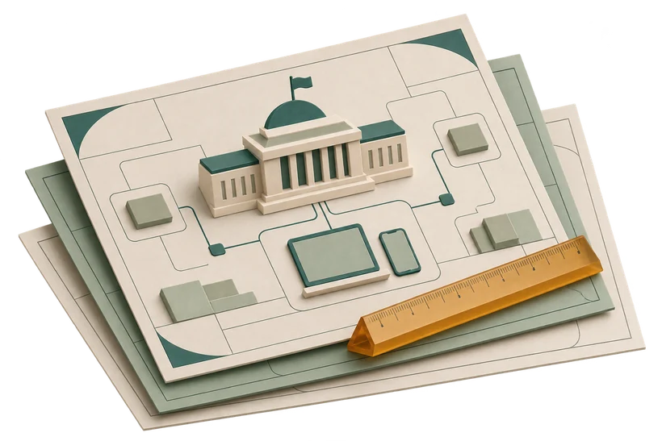
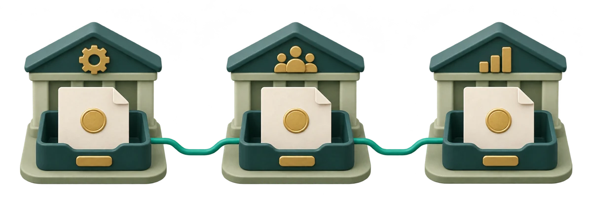
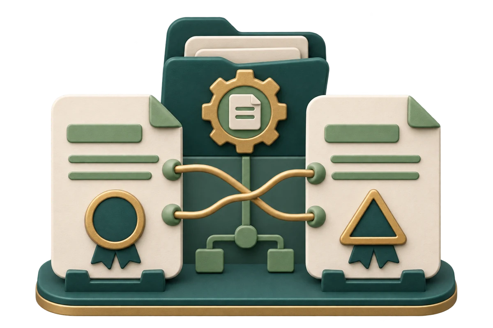
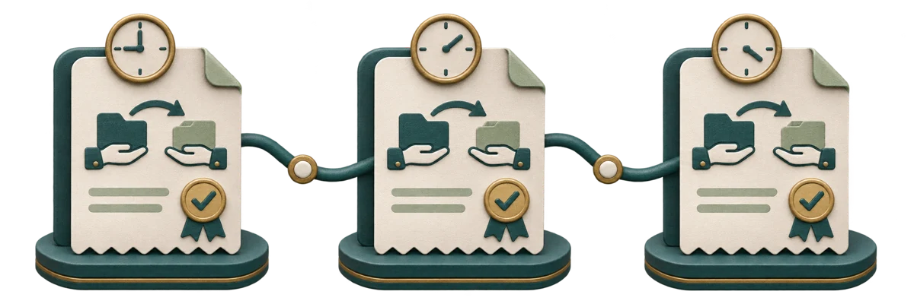
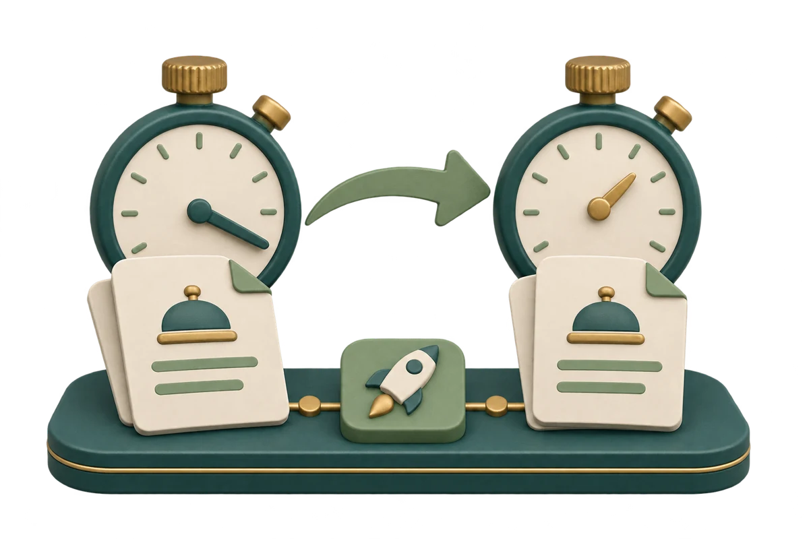
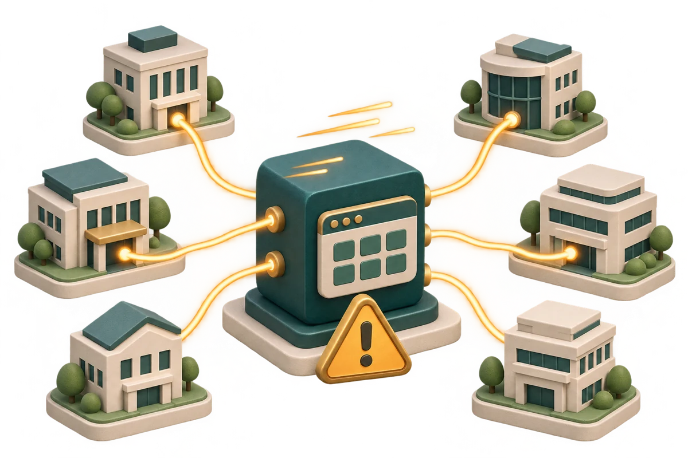
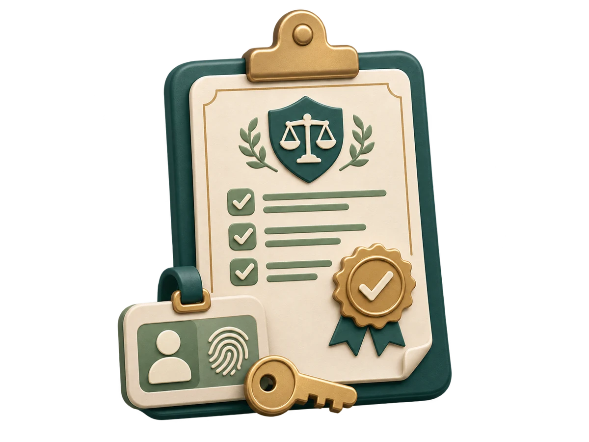
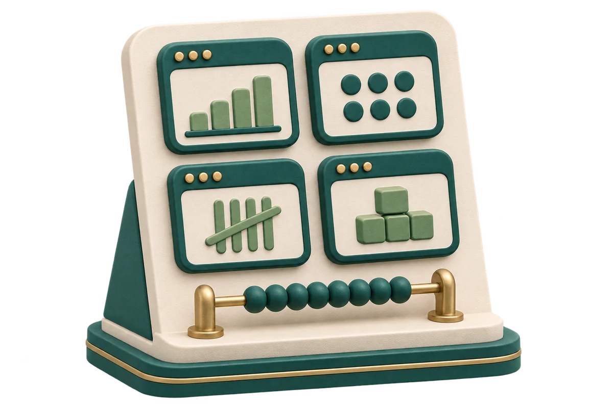
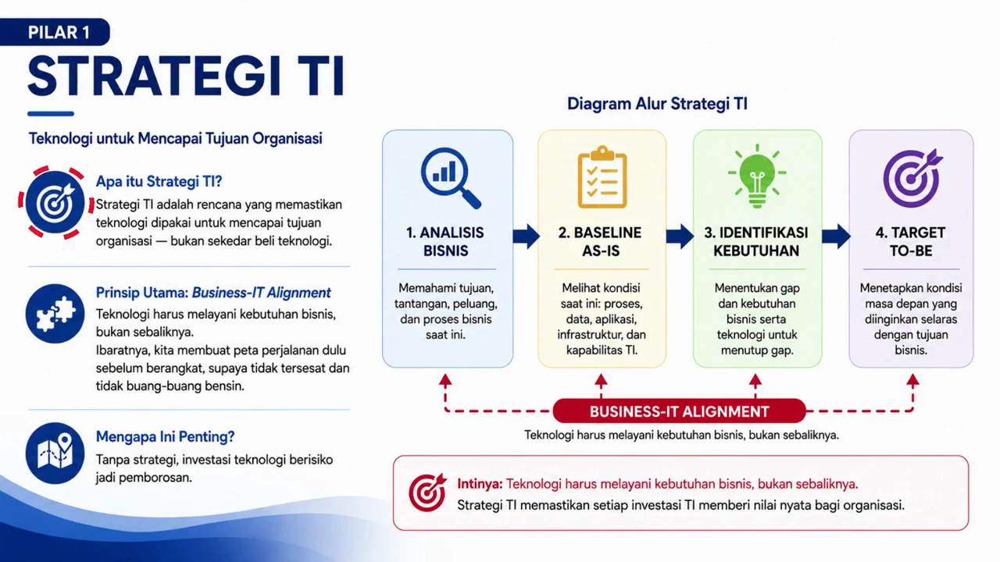

Tantangan Anda










IT Enterprise
Pelajari cara menyelaraskan strategi, tata kelola, dan arsitektur TI dengan kebutuhan organisasi. Lewat kasus layanan statistik, susun prioritas pembiayaan dan tentukan cara mengukur kinerja layanan.
Berkas misi

Ringkasan materi video
Ringkasan lima topik dalam video, bukan transkrip kata demi kata.
- Strategi TI
Video menekankan bahwa teknologi melayani kebutuhan bisnis. Pemetaan kondisi saat ini dan kebutuhan dilakukan sebelum menetapkan target TI.
- Tata kelola dan tata laksana
Governance menentukan apa yang harus dicapai, arah, aturan, dan penanggung jawab. Management atau tata laksana menjalankan cara teknis untuk mencapainya.
- Enterprise architecture
Empat lapisan dalam video mencakup proses dan layanan bisnis, data, aplikasi pendukung, serta infrastruktur teknologi. EA memperlihatkan hubungan di antaranya.
- Gap analysis
Retained berarti aset masih layak dipertahankan. New digunakan untuk kebutuhan yang belum terpenuhi, sedangkan eliminated untuk aset yang tidak lagi memberi nilai atau menghambat kebutuhan organisasi.
- Monitoring dan pembiayaan
Video membedakan TCO dari harga beli awal. Total biaya kepemilikan juga mencakup biaya yang timbul selama penggunaan layanan, seperti pemeliharaan, lisensi, dan pengembangan SDM.
Video dari berkas pengguna: Juliandra Ariiq K – IT Enterprise (Compressed).mp4
Dua keputusan
Jawab kedua pertanyaan berikut berdasarkan materi dan latihan tadi.
Uji pemahaman
Dua keputusan untuk Anda
Bawa ke pekerjaan
Meninjau pemahaman IT Enterprise
Analisis kesenjangan membantu tim menilai aset yang masih berguna, yang perlu disediakan, dan yang layak dihentikan. Untuk menilai layanan, bedakan target kinerja, janji tingkat layanan, dan biaya kepemilikannya.
Dalam analisis kesenjangan, sebuah aplikasi sudah tidak relevan dengan kebutuhan organisasi, mahal dipelihara, dan menghambat integrasi. Kelompok apa yang paling sesuai menurut video?
Video menempatkan aset yang tidak lagi relevan, tidak efisien, atau menghambat integrasi dalam kelompok eliminated.
Layanan TI dijanjikan tersedia 99,9% sesuai kesepakatan. Dalam video, janji tingkat layanan ini disebut ...
SLA merupakan kesepakatan atau janji tingkat layanan, contohnya ketersediaan 99,9%. TCO membahas biaya total kepemilikan, sedangkan EA memetakan hubungan komponen organisasi dan TI.
Misi selesai

Hasil latihan
Mulai usulan TI dari kebutuhan organisasi. Petakan komponen yang terkait, nilai apa yang perlu dipertahankan atau diubah, lalu tentukan target layanan dan biaya kepemilikannya.